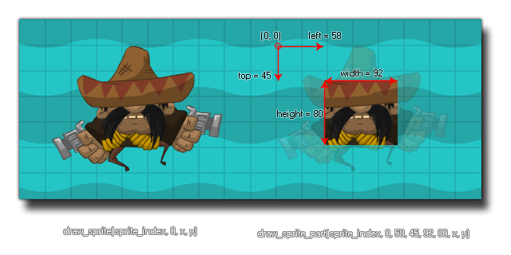

draw_sprite_part(sprite, subimg, left, top, width, height, x, y);
| Argumento | Descripción |
|---|---|
| sprite | El índice del sprite para dibujar. |
| subimg | El subimg (frame) del sprite para dibujar (image_index o -1 se correlaciona con el cuadro actual de animación en el objeto). |
| left | La posición x en el sprite de la esquina superior izquierda del área para dibujar. |
| top | La posición y en el sprite de la esquina superior izquierda del área para dibujar. |
| width | El ancho del área para dibujar. |
| height | La altura del área para dibujar. |
| x | La coordenada x de dónde dibujar el sprite. |
| y | La coordenada y de dónde dibujar el sprite. |
Devoluciones: N / A
Con esta función puedes dibujar parte de cualquier sprite en una posición dada dentro de la habitación. Al igual que con draw_sprite puede especificar un sprite y una subimagen para el dibujo, luego debe dar las coordenadas relativas dentro del sprite del área para seleccionar el dibujo. Esto significa que una posición izquierda de 0 y una posición superior de 0 sería la esquina superior izquierda del sprite y todas las demás coordenadas deberían tomarse desde esa posición. La imagen a continuación muestra un ejemplo de cómo funciona esto: 
Debe tener en cuenta que si la página de texturas permite un recorte automático, es posible que esta función no funcione como se esperaba, ya que el espacio extra "vacío" alrededor del elemento se habrá eliminado para crear la página de textura. Para resolver este problema, deberá establecer la configuración de la página de texturas (en el Editor de grupos de texturas ) para desactivar la opción Recorte automático.
draw_sprite_part(sprite_index, image_index, 4, 0, sprite_width-16, sprite_height-16, x, y );
Esto dibujará las instancias asignadas sprite (sprite_index) y su marco de animación actual (image_index), sin embargo, afeitará un margen de 4px del ancho en ambos lados, y un margen de 8 píxeles de la altura desde la parte inferior del píxel original de 24x24. duende.